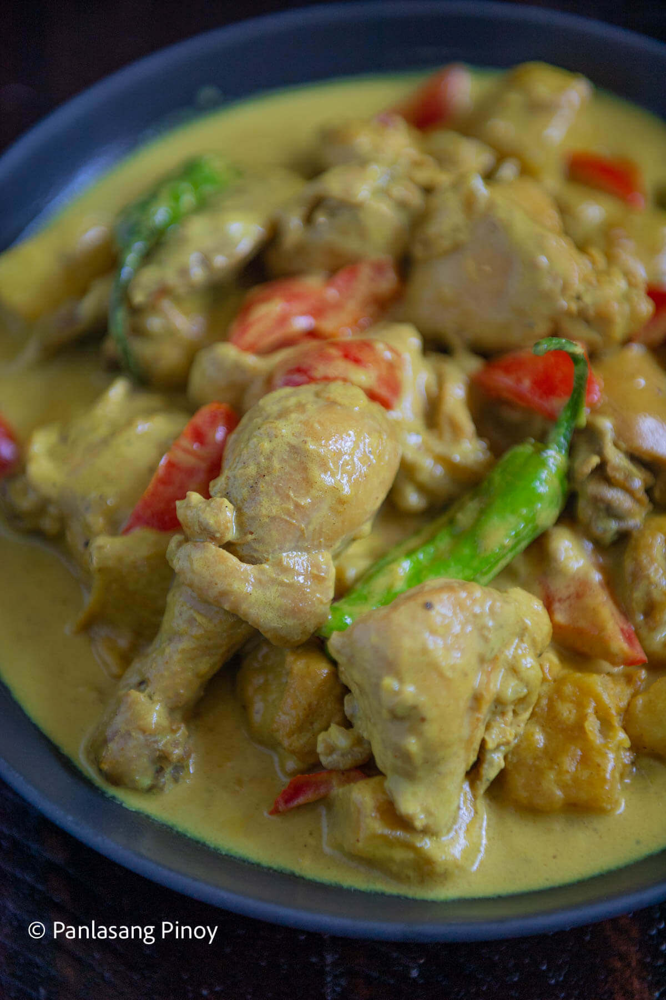

Pinoy Style Chicken Curry

A recipe for Pinoy Style Chicken Curry
Pinoy-style chicken curry is a flavorful twist on a well-loved classic. Unlike the spicier versions found in other countries, the Filipino take is rich, creamy, and comforting, made with tender chicken simmered in a coconut milk-based curry sauce. What sets it apart is the addition of local ingredients like potatoes, carrots, and bell peppers, making it heartier and perfect for pairing with steamed rice.
This dish strikes the perfect balance between savory and mildly sweet, with just a hint of spice that keeps you coming back for more. Whether it’s served during a festive gathering or as a hearty family dinner, Pinoy-style chicken curry brings warmth and satisfaction to any meal. With its rich flavors and comforting aroma, it’s a dish that feels like home—one you’re sure to savor with every bite.
Ingredients (for 2 people)
- 0.67 lbs. chicken cut into serving pieces
- 0.33 tablespoon curry powder
- 0.33 piece potato cubed
- 1.33 cloves garlic minced
- 0.67 stalks celery sliced
- 0.33 piece red bell pepper sliced
- 0.67 pieces long green pepper
- 0.33 piece onion chopped
- 0.67 thumbs ginger cut into strips
- 0.67 cups coconut milk
- 0.17 cup all-purpose cream optional
- 0.33 cup water
- fish sauce and ground black pepper to taste
Steps
- Heat oil in a pan. Fry potato for 1 minute per side. Remove from the pan. Set aside.
- Using the remaining oil, saute garlic, onion, celery, and ginger until onion softens.
- Add the chicken pieces. Saute until the outer part of the chicken turns light brown.
- Add 1 tablespoon fish sauce. Continue sautéing for 1 minute.
- Pour-in coconut milk and water. Let boil.
- Add curry powder. Stir until the powder is completely diluted. Cover the pot and continue cooking between low to medium heat until the liquid reduces to half.
- Add the red bell pepper and pan fried-potato. Cook for 5 minutes.
- Season with fish sauce and ground black pepper as needed. You can also add all-purpose cream if desired.
- Transfer to a serving bowl. Serve and enjoy!
Home